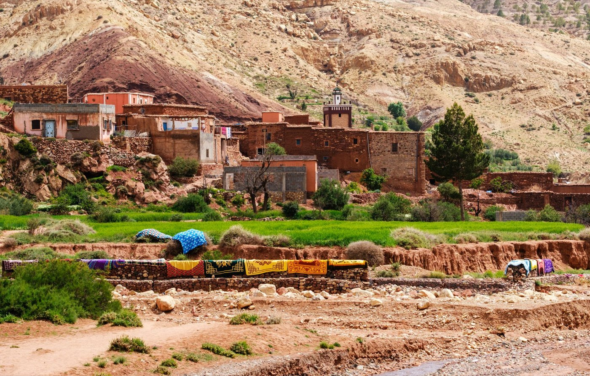

Passeport
Pas de visa pour les Suisses jusqu'à 90 jours. Passeport valable six mois après la date de retour. Nous vous rappelons les règles en vigueur avec l'offre.

Quand partir, quels papiers, quels vols, quelle monnaie : l'essentiel pour partir tranquille. Et pour tout le reste, Sandra répond.
Le Maroc se visite toute l'année, mais pas partout en même temps. Le printemps et l'automne conviennent à presque tous les voyages. Les mois recommandés sont marqués d'un trait bleu.
Doux en journée à Marrakech et sur la côte, froid la nuit dans le désert et l'Atlas. Bonne période pour les villes impériales.
Comme janvier, avec les amandiers en fleur dans le Sud. En 2027, le ramadan commence en février.
Le printemps s'installe. Températures agréables partout, désert compris. Départ de notre circuit accompagné le 25 mars 2027.
L'un des meilleurs mois : chaud sans excès, campagnes vertes, soirées douces.
Encore très agréable. Il commence à faire chaud dans le Sud en fin de mois.
Chaud à Marrakech et dans le Sud. Agréable sur la côte, dans le Nord et en montagne.
Très chaud à l'intérieur du pays. On privilégie la côte atlantique, Tanger et le Rif.
Comme juillet. Le 2 août 2027, l'éclipse totale passe sur Tanger : nos deux voyages Éclipse partent fin juillet.
La chaleur retombe, la lumière est belle. Les villes impériales redeviennent très agréables.
Idéal pour le désert et le Sud. Départ de notre circuit accompagné le 20 octobre 2027.
Douceur et journées plus courtes. Très bien pour Marrakech, le désert et les kasbahs.
Doux en journée, frais la nuit. Les fêtes de fin d'année sont très demandées : réservez tôt.
Pas de visa pour les Suisses jusqu'à 90 jours. Passeport valable six mois après la date de retour. Nous vous rappelons les règles en vigueur avec l'offre.
Environ trois heures de vol. Directs Genève - Marrakech, et Genève - Tanger depuis le printemps 2026. Casablanca est également desservie. Nous les proposons avec le voyage ou séparément.
Le dirham marocain (MAD), à changer sur place. Cartes acceptées dans les hôtels et restaurants des villes, liquide utile dans les souks et les villages.
À l'heure de la Suisse en hiver, une heure de moins en été, sauf pendant le ramadan où le Maroc recule d'une heure.
Pourboires. C'est l'usage pour les guides, les chauffeurs et le personnel des hôtels et des restaurants. Dans notre circuit accompagné, les pourboires aux restaurants et les frais de porteurs sont compris. Pour les voyages privés, nous vous donnons des repères avec l'offre.
Tenue. Le Maroc est accueillant et habitué aux visiteurs. Dans les médinas, les villages et les lieux de culte, une tenue couvrant épaules et genoux est appréciée. La mosquée Hassan II de Casablanca est l'une des rares ouvertes aux non-musulmans.
Ramadan. Il se déplace chaque année d'une dizaine de jours. En 2027, il tombe en février et mars. Le pays vit au ralenti en journée et s'anime le soir. On voyage très bien pendant cette période, nous vous le signalons si votre voyage la traverse.
Santé. Pas d'obligation vaccinale particulière à ce jour pour les voyageurs venant de Suisse. Nous vous transmettons les recommandations officielles avec l'offre, et une assurance annulation et rapatriement est vivement conseillée.
Langue. L'arabe et l'amazigh sont les langues du pays. Le français est très largement parlé dans les villes et par nos guides.
Non. Les ressortissants suisses entrent au Maroc sans visa pour un séjour touristique de 90 jours au maximum. Il faut un passeport valable six mois après la date de retour. Nous vous rappelons les formalités en vigueur au moment de l'offre.
Le printemps (mars à mai) et l'automne (septembre à novembre) conviennent à presque tous les voyages. Le désert se visite de préférence d'octobre à avril. L'été est agréable sur la côte et dans le Nord, mais très chaud dans le Sud et à Marrakech.
Environ trois heures. Des vols directs relient Genève à Marrakech et, depuis le printemps 2026, Genève à Tanger. Casablanca est également desservie.
Le dirham marocain (MAD). On le change sur place, à l'arrivée ou en ville. Les cartes sont acceptées dans les hôtels et les restaurants des grandes villes, l'argent liquide reste utile dans les souks et les villages.
Le Maroc est à l'heure de la Suisse en hiver et a une heure de moins en été, sauf pendant le ramadan, où le pays recule d'une heure.
Oui, c'est l'usage pour les guides, les chauffeurs et le personnel des hôtels et des restaurants. Dans notre circuit accompagné, les pourboires aux restaurants et les frais de porteurs sont compris. Pour les voyages privés, nous vous donnons des repères au moment de l'offre.
Le ramadan se déplace chaque année d'une dizaine de jours. En 2027, il tombe en février et mars. Le pays vit au ralenti en journée et s'anime le soir. On voyage très bien pendant cette période, nous vous le signalons si votre voyage la traverse.
Vous décrivez votre projet en quatre étapes, ou vous nous écrivez sur WhatsApp. Sandra vous répond sous 24 heures, puis vous recevez une offre détaillée sous 7 jours. Le devis est gratuit et sans engagement.
Une autre question ? Écrivez à Sandra, elle répond sous 24 h.